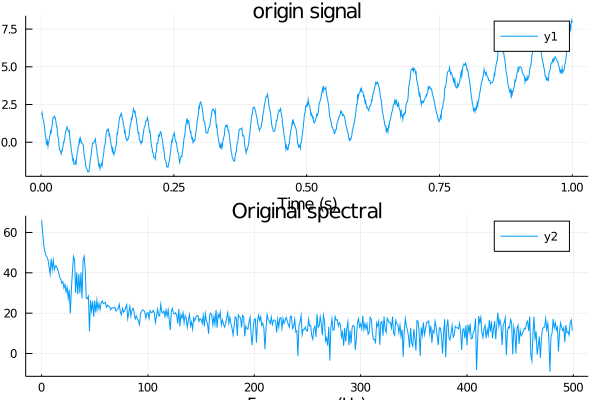
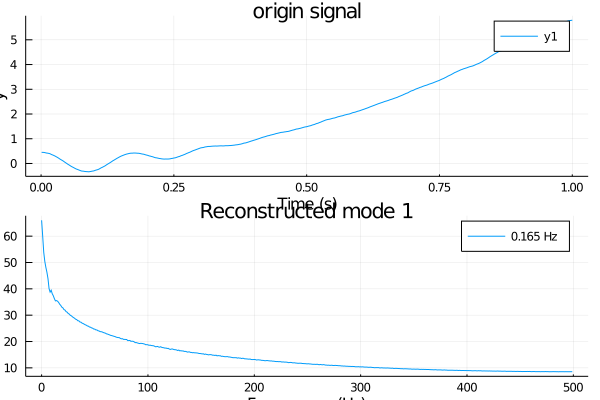
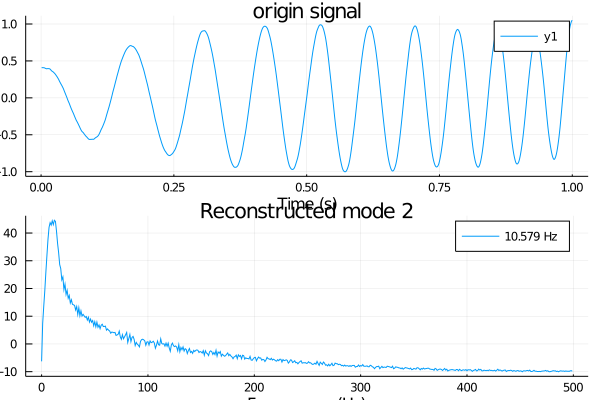
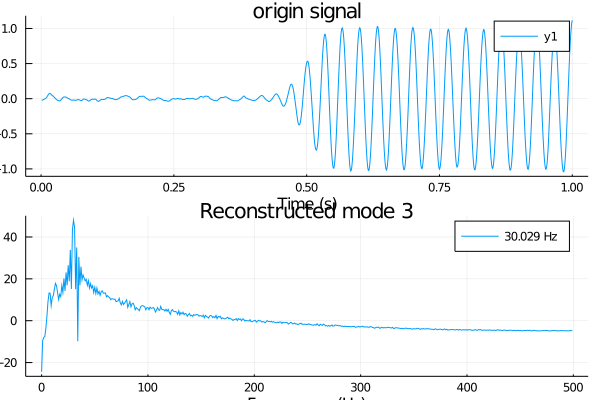

Example2
The second example uses a quadratic trend, a chirp signal, and a third mode with sharp transition between two constant frequencies
$f_{\mathrm{Sig} 2}(t)=6 t^{2}+\cos \left(10 \pi t+10 \pi t^{2}\right)+\left{\begin{array}{ll} \cos (60 \pi t) & t \leq 0.5 \ \cos (80 \pi t-10 \pi) & t>0.5 \end{array}\right. $
For $t \in [0,1]$the chirp’s instantaneous frequency varies linearly between $10\pi$ an $30\pi$.Consequently, the theoretical center frequency of the mode is located at $20\pi$ . The piecewise-constant bi-harmonic has spectral peaks expected at $60\pi$ and $80\pi$
Again, with VMD the estimated center frequencies con- verge to the expected frequencies precisely. Here, we chose to decompose into four modes, thus assigning each half of the piecewise-constant frequency signal to a separate mode. The spectral partitioning can be nicely appreciated in the spectral plot of the different modes. Here, EMD does a better job recov- ering the quadratic trend, and, correspondingly, the first oscilla- tion. However, EMD is unable to separate the two pieces of the piecewise constant frequency signal. .
julia> using VMD,Random,Plots
julia> T = 1000;
julia> t = (1:T)/T;
julia> sample_frequency = 1000;
julia> # center frequencies of components
f_1 = 10;
julia> f_2 = 60;
julia> f_3 = 80;
julia> # modes
v_1 = @. 6t^2;
julia> v_2 = @. cos(10π*t+10π*t^2)
1000-element Array{Float64,1}:
0.9995055730743954
0.9980188300587944
0.995535316310215
0.9920515766278236
0.9875651726383378
0.9820746992776882
0.9755798003302669
0.9680811829874794
0.9595806313877643
0.9500810191007717
⋮
0.730343516655704
0.7910975728967998
0.8449333912108219
0.8913628126476093
0.9299614080033781
0.9603725301679537
0.9823107900032507
0.995564920611647
1.0
julia> v_3 = [t1>=0.5 ? cos(60π*t1) : cos(80π*t1-10π) for t1 in t]
1000-element Array{Float64,1}:
0.9685831611286312
0.8763066800438627
0.7289686274214112
0.5358267949789944
0.3090169943749463
0.06279051952931364
-0.18738131458572646
-0.42577929156507305
-0.6374239897486917
-0.8090169943749481
⋮
0.06279051952930043
0.248689887164824
0.42577929156505256
0.5877852522924629
0.72896862742139
0.8443279255020033
0.9297764858882469
0.9822872507286828
1.0
julia> # composite signal, including noise
f = v_1 + v_2 + v_3 + 0.1*randn(length(v_1));
julia> # some sample parameters for VMD
alpha = 2000; # moderate bandwidth constraint
julia> tau = 0; # noise-tolerance (no strict fidelity enforcement)
julia> K = 4; # 3 modes
julia> DC = false; # no DC part imposed
julia> init = 0; # initialize omegas uniformly
julia> tol = 1e-7;
julia> v = vmd(f ; alpha = alpha,tau = tau,K = K,DC = false,init = 1,tol = tol,sample_frequency = sample_frequency)
--iteration times 97 -- error 9.223401399472415e-8
julia> # the first mode frequency
print("1st mode frequency $(n_mode(v,1))")
1st mode frequency 0.37201527653758415
julia> p0 = VMD.plot(v,k=0)
Plot{Plots.GRBackend() n=2}
julia> savefig(p0,"2_0.png")
julia> p1 = VMD.plot(v,k=1)
Plot{Plots.GRBackend() n=2}
julia> savefig(p1,"2_1.png")
julia> p2 = VMD.plot(v,k=2)
Plot{Plots.GRBackend() n=2}
julia> savefig(p2,"2_2.png")
julia> p3 = VMD.plot(v,k=3)
Plot{Plots.GRBackend() n=2}
julia> savefig(p3,"2_3.png")plot the original signal and spectrum

plot the 1st decomposed signal and spectrum

plot the 2st signal and spectrum

plot the 3st decomposed signal and spectrum
